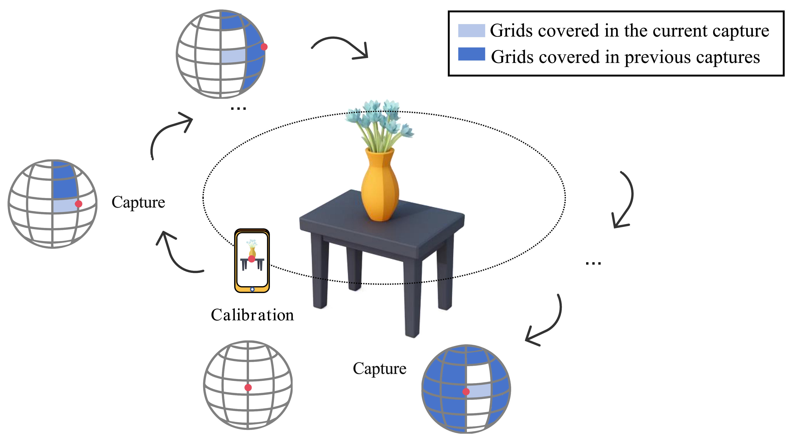

An Object-Centered Data Acquisition Method for 3D Gaussian Splatting using Mobile Phone
Abstract
High-quality 3D Gaussian Splatting (3DGS) reconstruction relies heavily on accurate poses and comprehensive viewpoint coverage. We present a mobile, object-centered data acquisition framework that addresses these challenges through on-device guidance and sensor fusion. Our system maps the camera's optical axis to a discretized spherical grid after a one-time calibration. By providing real-time, area-weighted coverage feedback and employing a stability gate based on smoothed IMU signals, we ensure that users capture uniform, blur-free images essential for high-fidelity reconstruction.
Key Contributions
- Spherical Mapping: Transformation of IMU-based device orientations into an object-centered spherical coordinate system.
- Coverage Guidance: Real-time visualization of area-weighted spherical coverage to ensure angular uniformity and completeness.
- Stability Control: A dual-mode stability gate (using linear acceleration and angular velocity) to filter out motion blur and unstable poses.
Experimental Setup
- Mobile Device: Redmi K70 Pro (Data logging & Real-time guidance).
- Workstation: NVIDIA RTX 5090D (Offline 3DGS training & reconstruction).
- Targets: Various tabletop objects with complex geometries and textures.
System Overview & Demonstration

Dataset Objects: The following objects were used to validate our method (miniclawmachine, bearplanter, terracotta warrior replica, coinbank).


Resources
-
APK Release (v1.1):
Download App & Assets
Includes `camera-6-core-debug.apk` (Full feature) and experimental builds.
Acknowledgements
This project builds upon 3D Gaussian Splatting and the Fossify Camera open-source project.